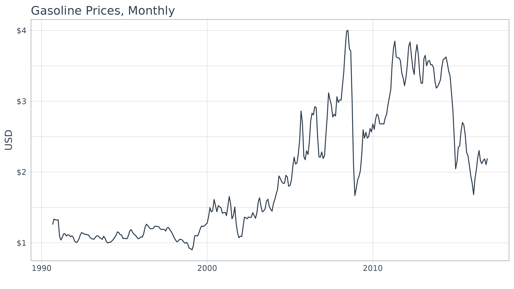
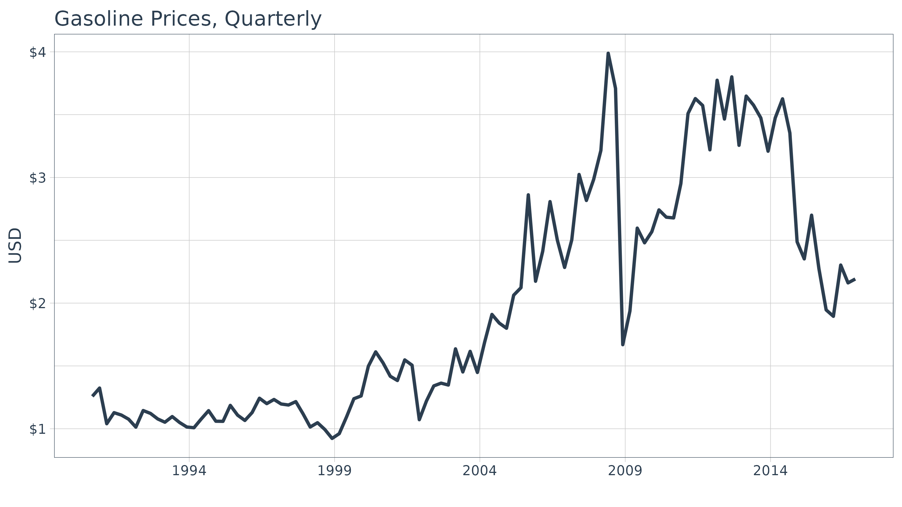
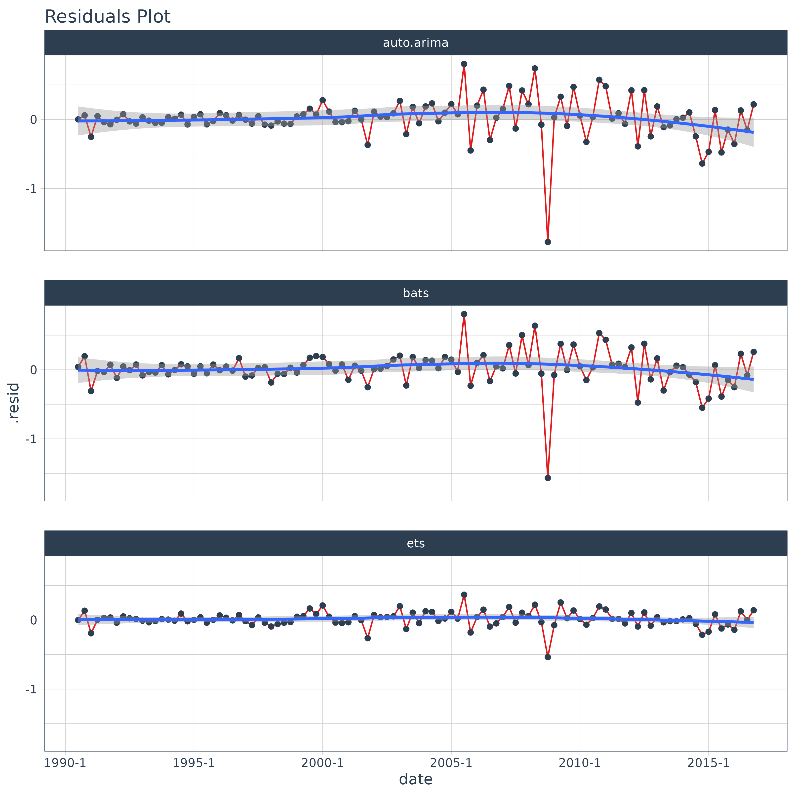
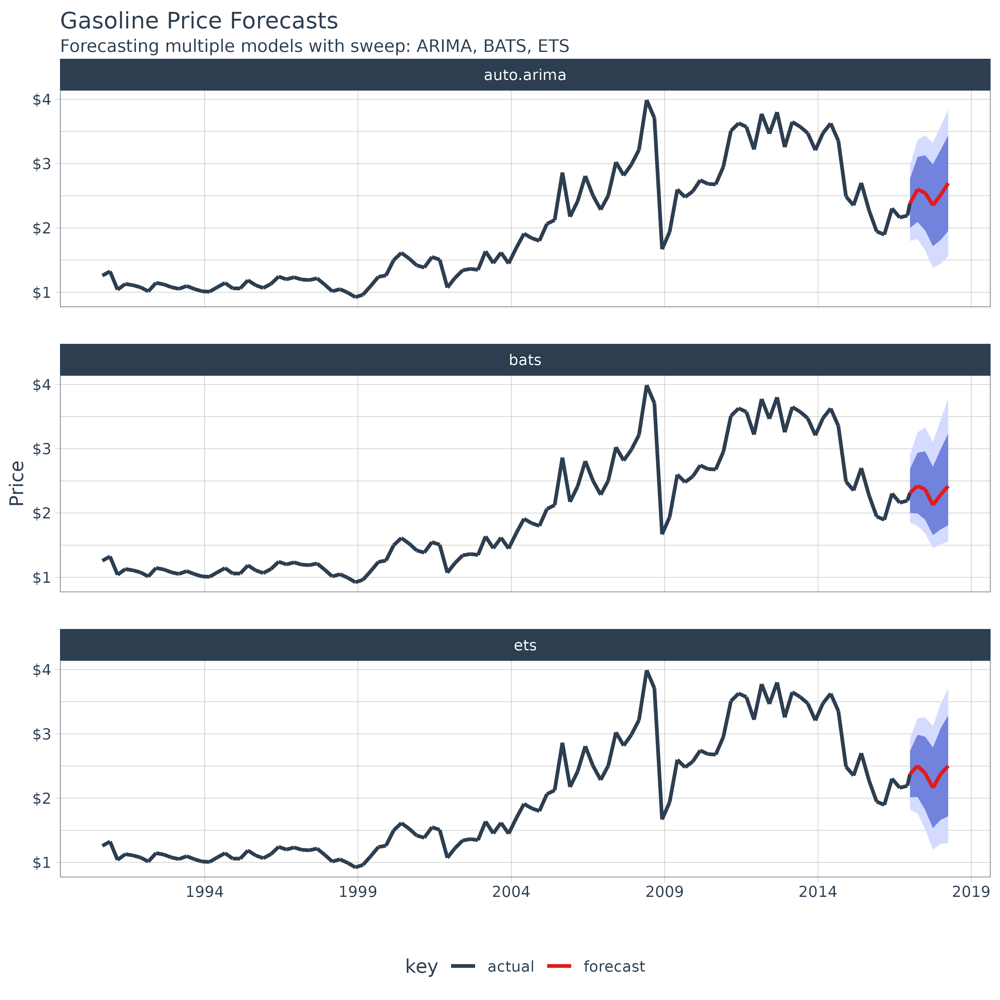

Forecasting Using Multiple Models
Matt Dancho
2025-08-28
Source:vignettes/SW02_Forecasting_Multiple_Models.Rmd
SW02_Forecasting_Multiple_Models.RmdExtending
broomto time series forecasting
One of the most powerful benefits of sweep is that it
helps forecasting at scale within the “tidyverse”. There are two common
situations:
- Applying a model to groups of time series
- Applying multiple models to a time series
In this vignette we’ll review how sweep can help the
second situation: Applying multiple models to a
time series.
Forecasting Gasoline Prices
To start, let’s get some data from the FRED data base using
tidyquant. We’ll use tq_get() to retrieve the
Gasoline Prices from 1990 through today (2025-08-28).
gas_prices_monthly_raw <- tq_get(
x = "GASREGCOVM",
get = "economic.data",
from = "1990-01-01",
to = "2016-12-31")
gas_prices_monthly_raw## # A tibble: 316 × 3
## symbol date price
## <chr> <date> <dbl>
## 1 GASREGCOVM 1990-09-01 1.26
## 2 GASREGCOVM 1990-10-01 1.34
## 3 GASREGCOVM 1990-11-01 1.32
## 4 GASREGCOVM 1990-12-01 NA
## 5 GASREGCOVM 1991-01-01 NA
## 6 GASREGCOVM 1991-02-01 1.09
## 7 GASREGCOVM 1991-03-01 1.04
## 8 GASREGCOVM 1991-04-01 1.08
## 9 GASREGCOVM 1991-05-01 1.13
## 10 GASREGCOVM 1991-06-01 1.13
## # ℹ 306 more rowsUpon a brief inspection, the data contains 2 NA values
that will need to be dealt with.
summary(gas_prices_monthly_raw$price)## Min. 1st Qu. Median Mean 3rd Qu. Max. NA's
## 0.900 1.138 1.615 1.974 2.697 4.002 2We can use the fill() from the tidyr
package to help deal with these data. We first fill down and then fill
up to use the previous and then post days prices to fill in the missing
data.
gas_prices_monthly <- gas_prices_monthly_raw %>%
fill(price, .direction = "down") %>%
fill(price, .direction = "up")We can now visualize the data.
gas_prices_monthly %>%
ggplot(aes(x = date, y = price)) +
geom_line(color = palette_light()[[1]]) +
labs(title = "Gasoline Prices, Monthly", x = "", y = "USD") +
scale_y_continuous(labels = scales::dollar) +
theme_tq()
Monthly periodicity might be a bit granular for model fitting. We can
easily switch periodicity to quarterly using tq_transmute()
from the tidyquant package along with the periodicity
aggregation function to.period from the xts
package. We’ll convert the date to yearqtr class which is
regularized.
gas_prices_quarterly <- gas_prices_monthly %>%
tq_transmute(mutate_fun = to.period, period = "quarters")
gas_prices_quarterly## # A tibble: 106 × 2
## date price
## <date> <dbl>
## 1 1990-09-01 1.26
## 2 1990-12-01 1.32
## 3 1991-03-01 1.04
## 4 1991-06-01 1.13
## 5 1991-09-01 1.11
## 6 1991-12-01 1.08
## 7 1992-03-01 1.01
## 8 1992-06-01 1.14
## 9 1992-09-01 1.12
## 10 1992-12-01 1.08
## # ℹ 96 more rowsAnother quick visualization to show the reduction in granularity.
gas_prices_quarterly %>%
ggplot(aes(x = date, y = price)) +
geom_line(color = palette_light()[[1]], linewidth = 1) +
labs(title = "Gasoline Prices, Quarterly", x = "", y = "USD") +
scale_y_continuous(labels = scales::label_dollar()) +
scale_x_date(date_breaks = "5 years", date_labels = "%Y") +
theme_tq()
Performing Forecasts Using Multiple Models
In this section we will use three models to forecast gasoline prices:
- ARIMA
- ETS
- BATS
Multiple Models Concept
Before we jump into modeling, let’s take a look at the multiple model process from R for Data Science, Chapter 25 Many Models. We first create a data frame from a named list. The example below has two columns: “f” the functions as text, and “params” a nested list of parameters we will pass to the respective function in column “f”.
df <- tibble(
f = c("runif", "rpois", "rnorm"),
params = list(
list(n = 10),
list(n = 5, lambda = 10),
list(n = 10, mean = -3, sd = 10)
)
)
df## # A tibble: 3 × 2
## f params
## <chr> <list>
## 1 runif <named list [1]>
## 2 rpois <named list [2]>
## 3 rnorm <named list [3]>We can also view the contents of the df$params column to
understand the underlying structure. Notice that there are three primary
levels and then secondary levels containing the name-value pairs of
parameters. This format is important.
df$params## [[1]]
## [[1]]$n
## [1] 10
##
##
## [[2]]
## [[2]]$n
## [1] 5
##
## [[2]]$lambda
## [1] 10
##
##
## [[3]]
## [[3]]$n
## [1] 10
##
## [[3]]$mean
## [1] -3
##
## [[3]]$sd
## [1] 10Next we apply the functions to the parameters using a special
function, invoke_map(). The parameter lists in the “params”
column are passed to the function in the “f” column. The output is in a
nested list-column named “out”.
# FIXME invoke_map is deprecated
df_out <- df %>%
mutate(out = invoke_map(f, params))## Warning: There was 1 warning in `mutate()`.
## ℹ In argument: `out = invoke_map(f, params)`.
## Caused by warning:
## ! `invoke_map()` was deprecated in purrr 1.0.0.
## ℹ Please use map() + exec() instead.
df_out## # A tibble: 3 × 3
## f params out
## <chr> <list> <list>
## 1 runif <named list [1]> <dbl [10]>
## 2 rpois <named list [2]> <int [5]>
## 3 rnorm <named list [3]> <dbl [10]>And, here’s the contents of “out”, which is the result of mapping a list of functions to a list of parameters. Pretty powerful!
df_out$out## [[1]]
## [1] 0.080750138 0.834333037 0.600760886 0.157208442 0.007399441 0.466393497
## [7] 0.497777389 0.289767245 0.732881987 0.772521511
##
## [[2]]
## [1] 13 4 7 9 8
##
## [[3]]
## [1] 3.289820 17.650249 -19.309894 2.124269 -21.630115 -8.220125
## [7] -3.526019 2.429963 -12.140748 1.681544Take a minute to understand the conceptual process of the
invoke_map function and specifically the parameter setup.
Once you are comfortable, we can move on to model implementation.
Multiple Model Implementation
We’ll need to take the following steps to in an actual forecast model implementation:
- Coerce the data to time series
- Build a model list using nested lists
- Create the the model data frame
- Invoke a function map
This is easier than it sounds. Let’s start by coercing the univariate
time series with tk_ts().
gas_prices_quarterly_ts <- gas_prices_quarterly %>%
tk_ts(select = -date, start = c(1990, 3), freq = 4)
gas_prices_quarterly_ts## Qtr1 Qtr2 Qtr3 Qtr4
## 1990 1.258 1.324
## 1991 1.040 1.128 1.109 1.076
## 1992 1.013 1.145 1.122 1.078
## 1993 1.052 1.097 1.050 1.014
## 1994 1.008 1.078 1.144 1.060
## 1995 1.059 1.186 1.108 1.066
## 1996 1.129 1.243 1.200 1.233
## 1997 1.197 1.189 1.216 1.119
## 1998 1.014 1.048 0.994 0.923
## 1999 0.961 1.095 1.239 1.261
## 2000 1.498 1.612 1.525 1.418
## 2001 1.384 1.548 1.506 1.072
## 2002 1.221 1.341 1.363 1.348
## 2003 1.636 1.452 1.616 1.448
## 2004 1.689 1.910 1.841 1.800
## 2005 2.063 2.123 2.862 2.174
## 2006 2.413 2.808 2.501 2.284
## 2007 2.503 3.024 2.817 2.984
## 2008 3.215 3.989 3.709 1.669
## 2009 1.937 2.597 2.480 2.568
## 2010 2.742 2.684 2.678 2.951
## 2011 3.509 3.628 3.573 3.220
## 2012 3.774 3.465 3.801 3.256
## 2013 3.648 3.576 3.474 3.209
## 2014 3.474 3.626 3.354 2.488
## 2015 2.352 2.700 2.275 1.946
## 2016 1.895 2.303 2.161 2.192Next, create a nested list using the function names as the first-level keys (this is important as you’ll see in the next step). Pass the model parameters as name-value pairs in the second level.
models_list <- list(
auto.arima = list(
y = gas_prices_quarterly_ts
),
ets = list(
y = gas_prices_quarterly_ts,
damped = TRUE
),
bats = list(
y = gas_prices_quarterly_ts
)
)Now, convert to a data frame using the function,
enframe() that turns lists into tibbles. Set the arguments
name = "f" and value = "params". In doing so
we get a bonus: the model names are the now conveniently located in
column “f”.
models_tbl <- tibble::enframe(models_list, name = "f", value = "params")
models_tbl## # A tibble: 3 × 2
## f params
## <chr> <list>
## 1 auto.arima <named list [1]>
## 2 ets <named list [2]>
## 3 bats <named list [1]>We are ready to invoke the map. Combine mutate() with
invoke_map() as follows. Bada bing, bada boom, we now have
models fitted using the parameters we defined previously.
models_tbl_fit <- models_tbl %>%
mutate(fit = purrr::invoke_map(f, params))
models_tbl_fit## # A tibble: 3 × 3
## f params fit
## <chr> <list> <list>
## 1 auto.arima <named list [1]> <fr_ARIMA>
## 2 ets <named list [2]> <ets>
## 3 bats <named list [1]> <bats>Inspecting the Model Fit
It’s a good point to review and understand the model output. We can
review the model parameters, accuracy measurements, and the residuals
using sw_tidy(), sw_glance(), and
sw_augment().
sw_tidy
The tidying function returns the model parameters and estimates. We
use the combination of mutate and map to
iteratively apply the sw_tidy() function as a new column
named “tidy”. Then we unnest and spread to review the terms by model
function.
models_tbl_fit %>%
mutate(tidy = map(fit, sw_tidy)) %>%
unnest(tidy) %>%
spread(key = f, value = estimate)## # A tibble: 20 × 6
## params fit term auto.arima bats ets
## <list> <list> <chr> <dbl> <dbl> <dbl>
## 1 <named list [1]> <fr_ARIMA> ar1 0.834 NA NA
## 2 <named list [1]> <fr_ARIMA> ma1 -0.964 NA NA
## 3 <named list [1]> <fr_ARIMA> sar1 0.939 NA NA
## 4 <named list [1]> <fr_ARIMA> sma1 -0.776 NA NA
## 5 <named list [1]> <bats> alpha NA 0.588 NA
## 6 <named list [1]> <bats> ar.coefficients NA NA NA
## 7 <named list [1]> <bats> beta NA NA NA
## 8 <named list [1]> <bats> damping.parameter NA NA NA
## 9 <named list [1]> <bats> gamma.values NA -0.0262 NA
## 10 <named list [1]> <bats> lambda NA 0.0000605 NA
## 11 <named list [1]> <bats> ma.coefficients NA 0.256 NA
## 12 <named list [2]> <ets> alpha NA NA 0.831
## 13 <named list [2]> <ets> b NA NA -0.0524
## 14 <named list [2]> <ets> beta NA NA 0.000100
## 15 <named list [2]> <ets> gamma NA NA 0.0521
## 16 <named list [2]> <ets> l NA NA 1.29
## 17 <named list [2]> <ets> phi NA NA 0.837
## 18 <named list [2]> <ets> s0 NA NA 0.0469
## 19 <named list [2]> <ets> s1 NA NA -0.0209
## 20 <named list [2]> <ets> s2 NA NA -0.0407sw_glance
Glance is one of the most powerful tools because it yields the model accuracies enabling direct comparisons between the fit of each model. We use the same process for used for tidy, except theres no need to spread to perform the comparison. We can see that the ARIMA model has the lowest AIC by far.
## Warning: The `.drop` argument of `unnest()` is deprecated as of tidyr 1.0.0.
## ℹ All list-columns are now preserved.
## Call `lifecycle::last_lifecycle_warnings()` to see where this warning was
## generated.## # A tibble: 3 × 15
## f params fit model.desc sigma logLik AIC BIC ME RMSE
## <chr> <list> <list> <chr> <dbl> <dbl> <dbl> <dbl> <dbl> <dbl>
## 1 auto… <named list> <fr_ARIMA> ARIMA(1,1… 0.298 -20.6 51.2 64.4 0.0180 0.291
## 2 ets <named list> <ets> ETS(M,Ad,… 0.118 -76.6 173. 200. 0.0149 0.292
## 3 bats <named list> <bats> BATS(0, {… 0.116 159. 179. 184. 0.0193 0.259
## # ℹ 5 more variables: MAE <dbl>, MPE <dbl>, MAPE <dbl>, MASE <dbl>, ACF1 <dbl>sw_augment
We can augment the models to get the residuals following the same
procedure. We can pipe (%>%) the results right into
ggplot() for plotting. Notice the ARIMA model has the
largest residuals especially as the model index increases whereas the
bats model has relatively low residuals.
models_tbl_fit %>%
mutate(augment = map(fit, sw_augment, rename_index = "date")) %>%
unnest(augment) %>%
ggplot(aes(x = date, y = .resid, group = f)) +
geom_line(color = palette_light()[[2]]) +
geom_point(color = palette_light()[[1]]) +
geom_smooth(method = "loess") +
facet_wrap(~ f, nrow = 3) +
labs(title = "Residuals Plot") +
theme_tq()## `geom_smooth()` using formula = 'y ~ x'
Forecasting the model
Creating the forecast for the models is accomplished by mapping the
forecast function. The next six quarters are forecasted
withe the argument h = 6.
## # A tibble: 3 × 4
## f params fit fcast
## <chr> <list> <list> <list>
## 1 auto.arima <named list [1]> <fr_ARIMA> <forecast>
## 2 ets <named list [2]> <ets> <forecast>
## 3 bats <named list [1]> <bats> <forecast>Tidying the forecast
Next, we map sw_sweep, which coerces the forecast into
the “tidy” tibble format. We set fitted = FALSE to remove
the model fitted values from the output. We set
timetk_idx = TRUE to use dates instead of numeric values
for the index.
models_tbl_fcast_tidy <- models_tbl_fcast %>%
mutate(sweep = map(fcast, sw_sweep, fitted = FALSE, timetk_idx = TRUE, rename_index = "date"))## Warning: There were 3 warnings in `mutate()`.
## The first warning was:
## ℹ In argument: `sweep = map(fcast, sw_sweep, fitted = FALSE, timetk_idx = TRUE,
## rename_index = "date")`.
## Caused by warning in `.check_tzones()`:
## ! 'tzone' attributes are inconsistent
## ℹ Run `dplyr::last_dplyr_warnings()` to see the 2 remaining warnings.
models_tbl_fcast_tidy## # A tibble: 3 × 5
## f params fit fcast sweep
## <chr> <list> <list> <list> <list>
## 1 auto.arima <named list [1]> <fr_ARIMA> <forecast> <tibble [112 × 7]>
## 2 ets <named list [2]> <ets> <forecast> <tibble [112 × 7]>
## 3 bats <named list [1]> <bats> <forecast> <tibble [112 × 7]>We can unnest the “sweep” column to get the results of all three models.
## # A tibble: 336 × 11
## f params fit fcast date key price lo.80 lo.95
## <chr> <list> <list> <list> <date> <chr> <dbl> <dbl> <dbl>
## 1 auto.a… <named list> <fr_ARIMA> <forecast> 1990-09-01 actu… 1.26 NA NA
## 2 auto.a… <named list> <fr_ARIMA> <forecast> 1990-12-01 actu… 1.32 NA NA
## 3 auto.a… <named list> <fr_ARIMA> <forecast> 1991-03-01 actu… 1.04 NA NA
## 4 auto.a… <named list> <fr_ARIMA> <forecast> 1991-06-01 actu… 1.13 NA NA
## 5 auto.a… <named list> <fr_ARIMA> <forecast> 1991-09-01 actu… 1.11 NA NA
## 6 auto.a… <named list> <fr_ARIMA> <forecast> 1991-12-01 actu… 1.08 NA NA
## 7 auto.a… <named list> <fr_ARIMA> <forecast> 1992-03-01 actu… 1.01 NA NA
## 8 auto.a… <named list> <fr_ARIMA> <forecast> 1992-06-01 actu… 1.14 NA NA
## 9 auto.a… <named list> <fr_ARIMA> <forecast> 1992-09-01 actu… 1.12 NA NA
## 10 auto.a… <named list> <fr_ARIMA> <forecast> 1992-12-01 actu… 1.08 NA NA
## # ℹ 326 more rows
## # ℹ 2 more variables: hi.80 <dbl>, hi.95 <dbl>Finally, we can plot the forecasts by unnesting the “sweep” column
and piping to ggplot().
models_tbl_fcast_tidy %>%
unnest(sweep) %>%
ggplot(aes(x = date, y = price, color = key, group = f)) +
geom_ribbon(aes(ymin = lo.95, ymax = hi.95),
fill = "#D5DBFF", color = NA, linewidth = 0) +
geom_ribbon(aes(ymin = lo.80, ymax = hi.80, fill = key),
fill = "#596DD5", color = NA, linewidth = 0, alpha = 0.8) +
geom_line(linewidth = 1) +
facet_wrap(~f, nrow = 3) +
labs(title = "Gasoline Price Forecasts",
subtitle = "Forecasting multiple models with sweep: ARIMA, BATS, ETS",
x = "", y = "Price") +
scale_y_continuous(labels = scales::label_dollar()) +
scale_x_date(date_breaks = "5 years", date_labels = "%Y") +
theme_tq() +
scale_color_tq()